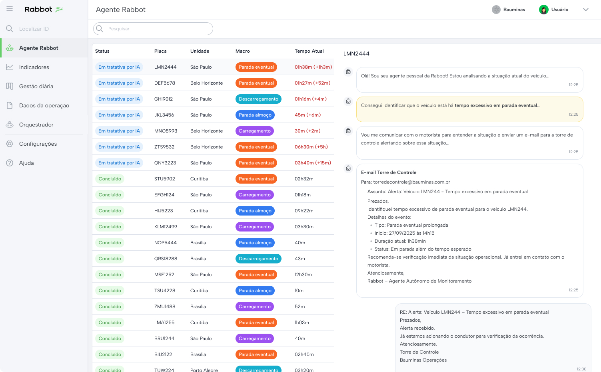

Projetos

Product Design
Product-Led Sales

Mobile
App Logística

Product Design
Redesign SaaS
IA aplicada ao contexto real da operação. Uma camada de inteligência.
Na torre de controle das transportadoras, os operadores precisavam monitorar se os motoristas estavam cumprindo os tempos de cada atividade — parada para almoço, carregamento, pernoite. O processo era totalmente manual: alternar entre a plataforma da Rabbot e o rastreador, checar veículo por veículo.
Quando o operador finalmente percebia o atraso e tentava contato, o motorista já havia retomado a rota. A janela de intervenção passava.
Perda de fretes, horas extras não planejadas e falta de controle sobre a operação. O problema não era o atraso — era não saber que ele estava acontecendo.
Fui até a torre de controle acompanhar essa rotina pessoalmente. Vi o operador repetindo esse ciclo dezenas de vezes por dia. Foi ali que ficou claro: dava pra automatizar essa vigilância com um agente de IA.
Sentei com o time da torre de controle para entender o fluxo em detalhes. Quais macros eram críticas? O que configurava um atraso relevante? Quando a intervenção fazia diferença? Esse mapeamento foi essencial, não para construir uma automação genérica, mas para definir a lógica de decisão de um agente que precisava agir como um operador experiente. Cada regra que desenhei partiu de um comportamento real que observei.
Fluxo operacional
O agente assumiu o papel de monitorador ativo da frota. Ele acompanha macros críticas, identifica desvios e inicia tratativas automaticamente via WhatsApp com o motorista, escalando para gestores se necessário. O desafio para mim foi definir quando agir, com quem falar e como comunicar. Não sou desenvolvedor e não sei criar um agente. Meu trabalho foi traduzir o comportamento operacional em lógica acionável. Trabalhei em parceria com um desenvolvedor que implementou isso no n8n.

Interface da torre de controle com tratativas iniciadas pelo agente
Precisávamos provar que funcionava, não com uma demo, mas com dados reais. Sugeri um teste A/B. Integramos com os rastreadores do cliente sem custo para ele. Dois meses observando sem intervenção. Os números falaram por si:
A redução veio de três frentes: pernoite caiu 1.1h por ocorrência, parada para almoço reduziu 3.6 min e parada eventual caiu 14.2 min. Com 20% de taxa capturável, o agente liberou 10.5 dias de operação e evitou 126h de hora extra no período. A IA não apenas notifica, ela muda o comportamento operacional.
Relatório de impacto gerado ao final do teste — dados reais da operação Bauminas